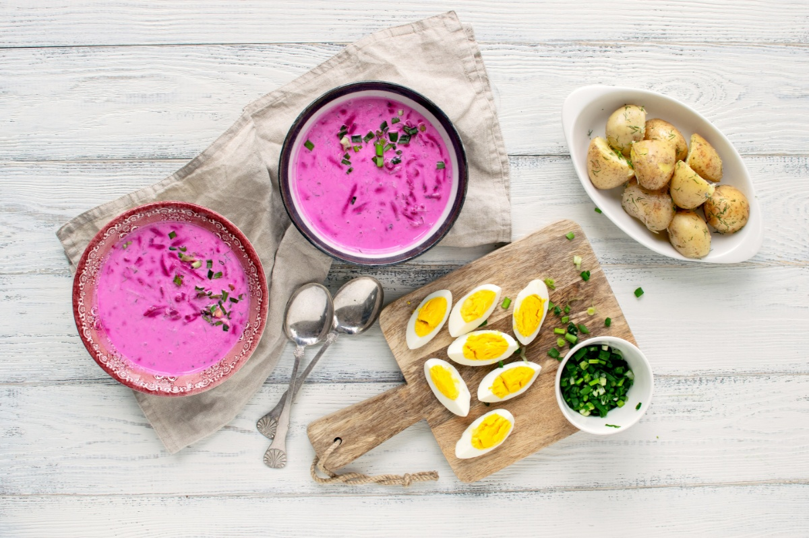

Cold Beet soup

Description
You will experience the real taste of Lithuania cuisine if you taste this easy-to-cook soup, especially popular in Lithuania – „šaltibarčiai“ (cold beetroot oup, pink soup)! The soup has a shocking bright pink colour due to the natural beetroot juice and an incredibly fresh taste due to the most important ingriedent in the cold soup – kephir, recognized by nutritionists as one of the healthiest products in the world.
Carlo petrini, an Italian founder and leader of the famous Slow Food movement, has called Lithuanian cold beetroot soup „the world‘s most aesthetic cold soup“.
Ingredients
- 500g beetroots, boiled or marinated;
- 200g cucumbers;
- 20g dill;
- 30g green onions;
- 1l kefir;
- milk (amount depends on how liquid you want your soup to be);
- 2 boiled eggs;
- 100 ml sour cream
Steps
- Finely chop the dill and the green onions;
- Cut an unpeeled cucumber into small cubes;
- Grate the boiled or marinated beetroots into the pot together with the greens;
- Add salt and sour cream, pour in the kefir and mix everything together;
- Chop up the boiled eggs and add to the soup;
- Water the soup down with milk, squeeze in some lemon juice if you like it sour;
- Serve the Cold Pink Soup with boiled or fried potatoes sprinkled with dill.